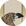

Requires
- Buildings:

- Religions: 
Basic Building Statistics (can be modified by difficulty level, arts, skills, traits and retainers)
- Cost: 12500
- Spreads pro-Independent sentiment to neighbouring provinces (+2 influence)
- Improves the spread of pro-Independent sentiment (+5 influence)
- +3 to repression in this province
- +3 to happiness in this province
Clan Effects
- No spread of non-clan allegiance across all provinces
Description
The loyalty of the loyal refreshes the people.
A military society is a "secret" organisation that encourages nationalist views in the population, and makes them happier in these times of change by giving them a sense of security. Usually membership is limited to officers, but wealthy civilians may contribute their support as well. The society's membership is an open secret: everyone knows it exists, but no one actually talks about it, or ever claims to be a member. Eventually military societies were to plague Japanese politics, and cause no end of misfortune to Japan and other countries. After the Great War, Japan entered a period when ultra-nationalist factions within the Imperial Japanese Army and the Navy professed enormous loyalty to the Emperor. Often these groups were middle and low-ranking officers, and they were quite prepared to assassinate both politicians and senior officers in their own services that they considered to be insufficiently loyal to the Imperial Throne. Any sign of compromise, social liberalism or free thinking was seen as base treachery to be punished with death at their hands. As might be expected, in such a febrile atmosphere, moderate politicians kept quiet. The military societies acted in zeal, but seemed unable to understand that others could be equally loyal and still hold different views as to what was best for Japan. Officers in military societies were also quite prepared to kill themselves to advance their views about what was right for the country.